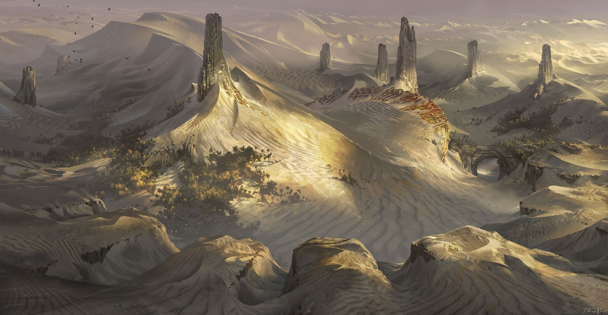
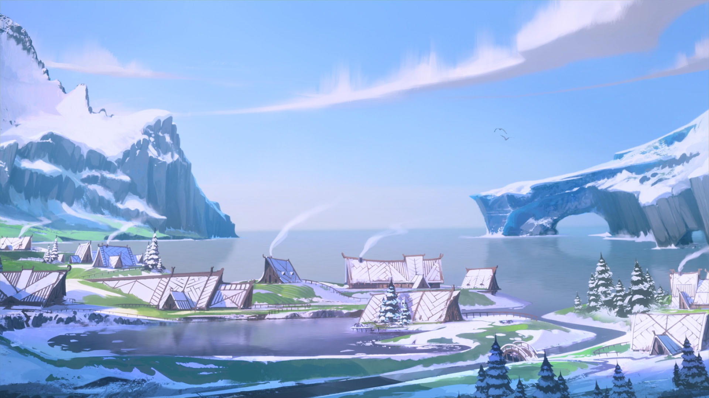
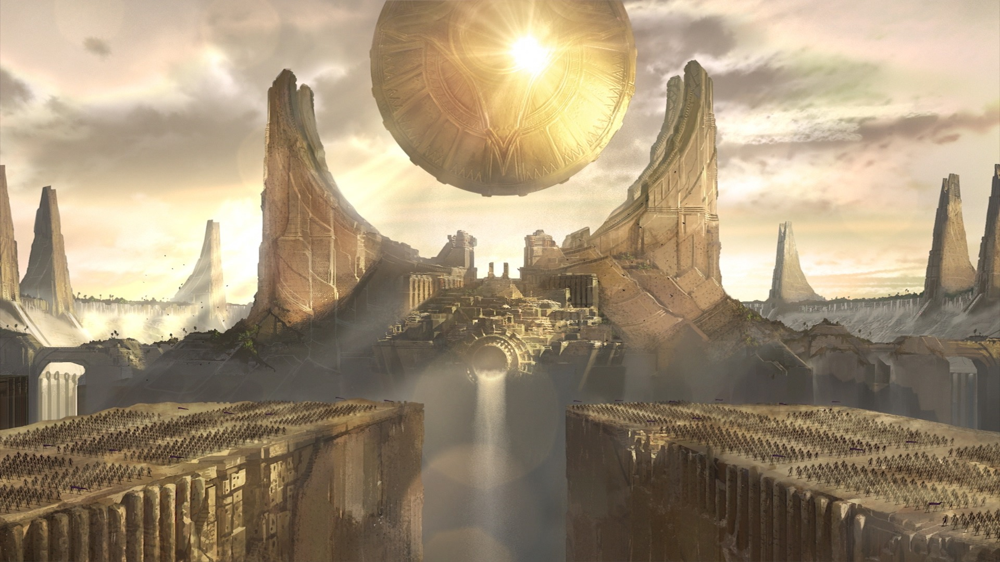

HIDDEN SUMMONERS
숨어 사는 소환사들
리그 오브 레전드 IP 확장 제안 · 게임기획 포트폴리오
한 판을 하지 않아도,
머물 이유가 있는 LoL
스크롤 ↓
리그 오브 레전드 IP 확장 제안 · 게임기획 포트폴리오

이겨도 져도, 남는 건 LP 하나.
30분 집중 · 팀원 갈등
매 패치 챔피언 · 아이템 변경
바뀐 메타 · 손 감각 차이
이겨도 져도 숫자 하나
경쟁은 협곡에 → 쉼과 기록은 그 바깥에
숨은 소환사들의 학회 기록관
벽에 걸린 그림은 룬테라 각 지역으로 통하는 문입니다

신들처럼 몰래 도시에 섞여 산다.
주민은 그들의 정체를 모른다.
분쟁을 협곡 승부로 결정
→ 공식 설정에서 삭제
도시별 학회가 협곡에서 겨룸
→ 도시의 운명

경쟁 없는 놀이, 그리고 한 소환사의 하루
손 빠르기 X · 눈치 O
이동 + 버튼 1개 · 공부 0
중간 참여 · 진 쪽도 보상
전체 시야 → 보기만 해도 긴장

작게 시작해, 증명하며 넓힌다
학회 광장 · 순위 변화 · 캐주얼
경기 같이 보기 · 숨은 소환사 찾기
3인칭 도시 · 포탈 여행